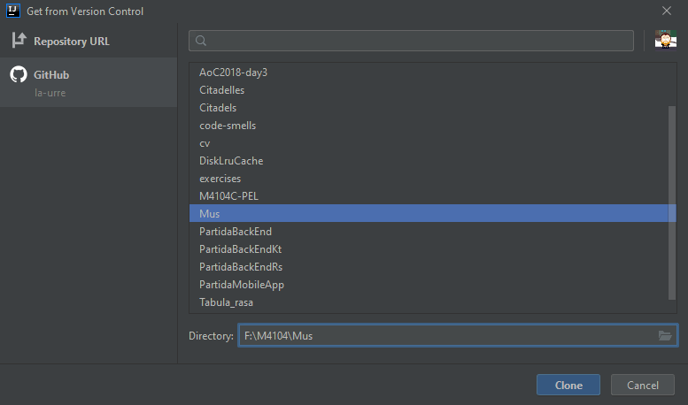
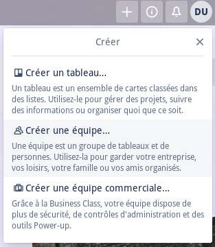

Mini-projet : Prise en main

M4104 - PEL : Agilité et bonnes pratiques de programmation
Institut Universitaire de Technologie de Bayonne et du Pays Basque
Robin Lucbernet - Christophe Marquesuzàa - Damien Urruty
DUT Informatique 2020 / 2021 - Semestre 4
Objectifs
- Configurer l'IDE IntelliJ
- Récupérer le projet et le tableau de suivi
- Jouer !
- Faire remonter les idées d'amélioration / bugs / nouvelles fonctionnalités sur le tableau de suivi
Configurer l'IDE
- Installation du plugin SonarLint
- Choix de Java 12
SonarLint

- Analyseur statique de code (Linter)
- Vérifie que le code respecte les bonnes pratiques
- Souligne le code problématique
IntelliJ : Installation de SonarLint (1/4)

IntelliJ : Installation de SonarLint (2/4)

Installation de SonarLint (3/4)

IntelliJ : Installation de SonarLint (4/4)

IntelliJ : Choix de Java 12 (1/5)

IntelliJ : Choix de Java 12 (2/5)
IntelliJ : Choix de Java 12 (3/5)
IntelliJ : Choix de Java 12 (4/5)
IntelliJ : Choix de Java 12 (5/5)
Suppression du JDK 1.8

Récupération du projet (1/9)
- Créer un compte par personne sur https://github.com puis s'identifier
- Passer cette étape si déjà inscrit
Récupération du projet (2/9)
- Faire un fork du projet par équipe depuis https://github.com/la-urre/Citadels
- Ceci permettra de travailler sur un projet dédié par équipe
Récupération du projet (3/9)
Ajouter les membres du groupe comme collaborateurs
Récupération du projet (4/9)
Cloner le dépôt pour chaque collaborateur
Récupération du projet (5/9)
Cliquer sur "Log in to Github"
Récupération du projet (6/9)
S'identifier sur Github puis cloner

Récupération du projet (7/9)
Ouvrir le projet
Récupération du projet (8/9)
Importer le projet en respectant ces paramètres
Récupération du projet (9/9)
Lancer les tests unitaires pour vérifier que le projet est bien configuré

Récupération du tableau de suivi (1/5)
- Créer un compte par personne sur https://trello.com puis s'identifier
- Passer cette étape si déjà inscrit
Récupération du tableau de suivi (2/5)
Créer une équipe en cliquant sur + en haut à droite
Récupération du tableau de suivi (3/5)
Donner un nom à l'équipe
Récupération du tableau de suivi (4/5)
Inviter les collaborateurs
Récupération du tableau de suivi (5/5)
- Aller sur : https://trello.com/b/CPQvPtQ5/citadelles
- Cliquer sur Afficher le menu > Plus > Copier le tableau
- Sélectionner l'équipe et cliquer sur Créer
- Tout le monde doit maintenant pouvoir voir et modifier le tableau
Jouer
Exécuter le jeu (voir le fichier README.md à la racine du projet)
Faire vivre le tableau de suivi
- Y remonter les bugs / idées d'améliorations et de nouvelles fonctionnalités
- Utiliser la colonne "A faire"
- Le programme des 3 premières itérations est prévu, à vous de planifier les 2 dernières